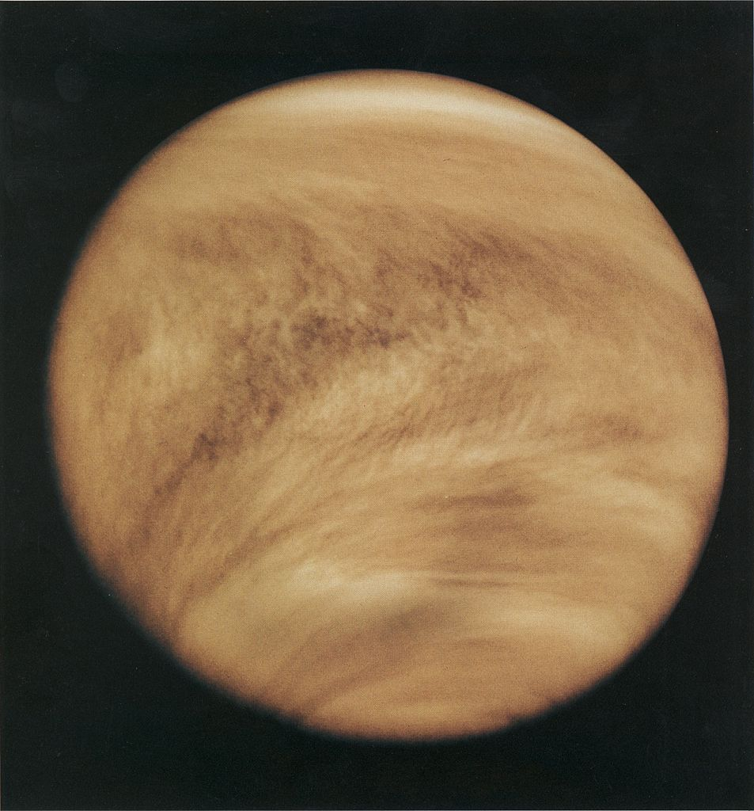

El Planeta Venus
 Venus es el segundo planeta de nuestro sistema solar y muchas veces se le denomina el gemelo de la Tierra debido a su tamaño. Pero aparte de su tamaño, Venus y la Tierra no se asemejan en nada. Venus está cubierto de una atmósfera densa de dióxido de carbono con nubes de ácido sulfúrico que nos impiden ver su superficie en luz visible. Su atmósfera atrapa el calor del Sol generando temperaturas en la superficie de 460 grados centígrados.
La órbita de Venus alrededor del Sol es interior a la de la Tierra y por ello es más corta. Un año en Venus sólo dura 224.7 días terrestres mientras el nuestro dura 365 días. Debido a su órbita interna, Venus, igual que Mercurio, pasa frente al Sol con respecto a la Tierra, y, bajo ciertas circumstancias, tenemos un tránsito.